ExcelDNA
ExcelDNA, diğer kütüphanelerden fakrlı olarak aslında Interop için de bir altenratif. Diğerleri daha çok Excel kapalıyken okuma/yazma yapan kütüphanelerken, ExcelDNA ise daha çok XLL tarzı add-inler ve özellikle de UDF'ler yapmak için kullanılıyor.
Buna benzer Addın Express, XLL Plus ve spreadsheetgear gibi araçlar da var, ancak bunlar ücretli olduğu için burda değinmeyeceğiz. İsteyen araştırabilir. Bu arada bunlardan özellikle ilkinde oldukça faydalı makalelere rastlama ihtimaliniz yüksek, hatta ben de sitemde yer yer onlardan link verdim.
UDF'ler
Farkettiyseniz, VBA'de oldukça önem veridğim UDF konusuna şimdiye kadar hiç değinmedik. Çünkü VSTO, UDF'leri tam olarak desteklemiyor. Bununla birlikte bu sorunu aşmanın birkaç yolu bulunuyor.
- COM add-in. Biz genel olarak VSTO add-inlere COM add-in dedik ama aslında bu ikisi biraz farklıldır. COM Add-inler hakkında burdan bilgi edinebilirsiniz, ama kafanızı çok da karıtşırmayın, biz bunla ilerlemiyicez.
- Automation Add-in(ExcelDNA'le alakası yok ama konu bütünlüğü adına buraya koydum. Biz ilk olarak bunu göreceğiz)
- XLL addin(bunu da bir sonraki başlıkta göreceğiz). Excel normal koşullarda managed code(.Net dili) kullanan bir XLL add-in yazmayı desteklemez. "İlle de C/C++ kullanacaksın" der. Ama demokrasilerde çare tükenmez. ExcelDNA bunun için var. Teşekkürler
Govert van Drimmelen. (Bu arada Python dilini bilenler pyxll ile de XLL add-in yazabilir)
COM Add-in ve Automation addinler hakkında daha fazla bilgiyi burada bulabilirsiniz.
Automation Add-inlerle UDF yazma
Öncelikle şunu söylemeden geçemiyceğim. Bu konuda da tıpkı "GC vs Marshall.Release" konusunda olduğu gibi çok kirli ve eksik bilgi var. Bir kaynakta olan detay bilgi diğerinde olmayabiliyor. Ben yine sizleri bu deli işinden kurtarmaya çalışacağım. Benim yaptıklarımı aynen yaparsanız sorunla karşılaşamsınız(Gerçi bu işler belli olmuyor. VS sürümü, Ofice sürümü, windows ve hatta genel olarak işletim sistemi sürümündeki farklılıklar hatalara neden olabilir, bunları bulup araştırmak size kalır) Mesela siz bu yazıyı 2025 veya sonrasında okuyorsanız, belki işler değişmiş olabilir, umarım ben de güncellemiş olurum.
Şimdi, bu yöntem ile hala klasik .Net ile kodumuzu yazıyoruz. Sadece birkaç ayar yapmamız gerekecek.
Öncelikle olaya bütünsel yaklaşalım. Birçok kaynakta bu yok, ben baştan vererek sizi zahemetten kurtarayım. Bu sitenin VSTO bölümünüde olduğunuza göre bir VSTO add-in yapmışsınızıdır veya yapmaya çalışıyorsunuzudur. Bu add-inle birlikte kullanılacak da çeşitli UDF'ler yapmak istiyorsunuz. Senaryo muhtemelen şöyledir(ki bende böyle olmuştu.) Excel Add-ininizi COM/VSTO Add-in'e çevirmek istediniz. Tüm menüleri v.s çevirdiniz, ama UDF'leriniz kaldı. Şimdi de onları .Net'e aktarmak istiyorsunuz. Yani özetle UDF'lerinizi aynı VSTO add-in içinde kullanacaksınız. Yani add-inizin yüklendiğinde UDF'leriniz de devreye girsin istiyoruz. Süreç basitçe şöyle işler.
- Öncelikle normal VSTO Add-ininzi yazarsınız. Bu bölüme kadar bunu nasıl yapacağınızı öğrendiniz zaten
- Şimdi Solution'ımıza ikinci bir proje(automation add-in) ekleyeceğiz. Bu önemli, çünkü ana VSTO add-in projesinde yer almayacak olan proje seviyesinde ayarlamalar yapacağız, bu yi,üzden ikinci bir projeye ihtiyacımız var.
- Sonra da VSTO Addin projemizin Thisaddin_startup kodu içine Automation add-in projemizdeki add-ini install eden bir kod yazacağız.(Bu aşama zorunlu değil, isterseniz kullanıcılara bunu manuel yapmalarını da söyleyebilirsiniz ama bu çok profesyonel bi yaklaşım olmaz)
Şimdi daha detaylıca neler yapacağımıza bakalım.
Automation Add-in projesini oluşturma
Komple repository'yi daha önce indirmediyseniz burdaki örnek uygulamayı şu ve şu olmak üzere iki ayrı linkten indirebilirsiniz, zira iki projemiz olacak.
Adımlar şöyle:
- Öncelikle Visual Studionuz açıksa kapatın ve admin olarak tekrar açın. Bunun için start mensünden veya taskbardan VS'ya sağ tıklayıp Run as Administrator deyin. (Bu seçenek More altında olabilir)
- VSTO Add-in projenizi açın. Şimdi Solution'a sağ tıklayıp Add>New Project diyerek yeni bir Class Library ekliyoruz
- Projemizin properties'ine sağ tıklayıp Build kısmını Register for COM Interop yapıyoruz. 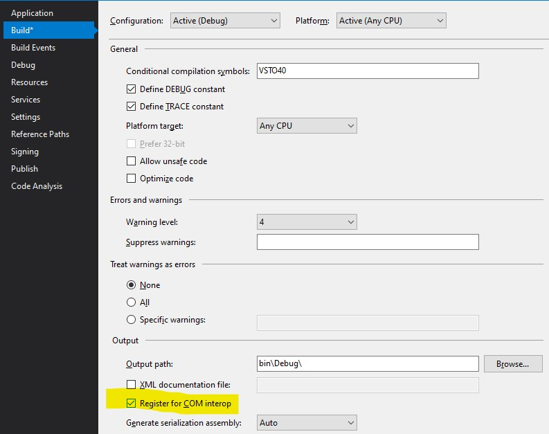
- Hala build içindeyken Platform Target kısmını da hangi Excel versiyonunu hedefliyorsanız onu seçin. Ben 64 bit Excel kullandığım için 64 seçiyorum.(Bu kısım birçok kaynakta atlanmış, siz atlamayın derim, zira hata alabilirsiniz, veya deneyin belki sizde çalışır. Ben sadece bir kaynakta gördüm, başkaları belirtmediğine göre onlarda farklı bir nedenle hata çıkmıyor olabilir ve sizde de onların benzeri bir durum olabilir)
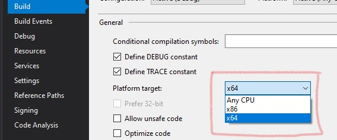
- Yine properties içindeyken bu sefer Application kısmına gelip Make assembly COM-Visible yapıyoruz. (Yukardaki maddede parantez içinde belirttiklerim geçerli)
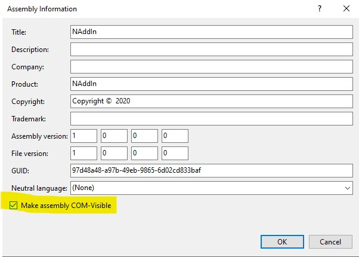
- Sonra Class1 isimli classımıza gider çeşitli kodlar yazarız. Öncelikle class'ımızın adını değiştirelim. Ben MyFunctions koydum. Sonra bunun hemen önüne 3 adet attribute yazıyoruz.
[Guid("3ADF6501-4D91-4B40-A374-23946CE29E6D")] //Bu GUID sizde farklı olacak
[ClassInterface(ClassInterfaceType.AutoDual)]
[ComVisible(true)]
Burda bahsi geçen GUID'i kendi oluşturacağınız GUID ile değiştirmeniz lazım. Bunu Tools menüsünden Generate/Create GUID diyerek yapabilrisiniz. Eğer bu menü sizde çıkmıyorsa bunu şuradan indirebilirsinz.
- Sonra class'ımız içine bir method yazarız, ki bu bizim UDF'imiz olacak. Mesela iki sayıyı toplayan basit bi fonksiyon olsun bu.
public double Topla(double number1, double number2)
{
return number1+number2;
}
- Şimdi bir de Excel bağlantısı olan bir fonksiyon yazalım. Ne de olsa UDF'imiz Excel'de çalışacak. Bu fonksiyon da bir hücredeki metnin içinde kaç kelime olduğunu bulsun. Daha önce VBA'le yaptığımız bir koddu bu.
public int KacKelime(Excel.Range hucre)
{
string icerik = hucre.Value.ToString();
return icerik.Split(' ').Length;
}
- Son olarak da yine classımızın sonuna şu 3 metodu yazarız. Bunları aynen copy-paste yapın lütfen. Bunlar UDF'imizi registry kayıt işlemleri içindir.
[ComRegisterFunctionAttribute]
public static void RegisterFunction(Type type)
{
Registry.ClassesRoot.CreateSubKey(GetSubKeyName(type, "Programmable"));
RegistryKey key = Registry.ClassesRoot.OpenSubKey(GetSubKeyName(type, "InprocServer32"), true);
key.SetValue("", System.Environment.SystemDirectory + @"\mscoree.dll", RegistryValueKind.String);
}
[ComUnregisterFunctionAttribute]
public static void UnregisterFunction(Type type)
{
Registry.ClassesRoot.DeleteSubKey(GetSubKeyName(type, "Programmable"), false);
}
private static string GetSubKeyName(Type type, string subKeyName)
{
System.Text.StringBuilder s = new System.Text.StringBuilder();
s.Append(@"CLSID\{");
s.Append(type.GUID.ToString().ToUpper());
s.Append(@"}\");
s.Append(subKeyName);
return s.ToString();
}
- Hazırlık aşaması bu kadar. Şu an sadece bu projeyi build edersek Excel'de kullanılabilir halde olduğunu görebilriz. Bunun için Projeye(Solution'a değil) sağ tıklayarak build deyin. Veya build menüsünden Build ProjeAdı deyin.
- Excel'i açın(açıksa kapatıp tekrar açın) ve Developer>Addins altındaki Automation'a tıkalyın
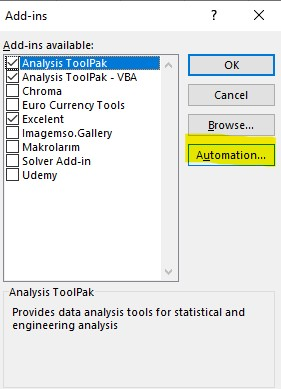
- Burda UDF'lerimizin olduğu sınıfı Namespace.ClassAdı şeklinde görmeliyiz. Göremiyorsak bi sorun olmuştur, yukardaki adımlardan birini atlamışsınızdır.
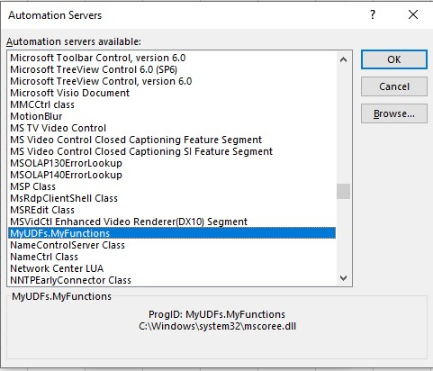
- Bunu seçtikten sonra add-inimiz Excel Add-in'leri içine gelir. Aşikar ki, bu UDF'leri kullanabilmek için bunun tick işareti seçili olması gerekir. Bu yaptığımız son 2-3 adım, ilgili add-inin manuel kurulumuyla ilgiliydi, ama biz bunu bir sonraki başlıkta nasıl otomatize edeceğimizi göreceğiz.
- Şimdi fonksiyonumuzu test edelim. Herhangi bir excel hücresine =Topla(3;5) yazalım ve sonucu görelim.
- Bu arada fonksiyolarımızın hepsini tek seferde görmek için fx butonuna tıklayıp kategorilerin en altına yerleşmiş olan sınıfımızı seçelim.
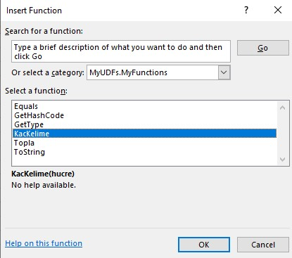
Burada görünmesini istemediğimiz bazı metodlar da var. Bunları aşağıdaki kodla override edelim ve Excel'den gizleyelim.(Bir tek GetType override edilemez, o da nazar boncuğu kalsın). Bu arada bunlar .Net dünyasında her sınıf/nesne için varolan object metodlarıdır, çünkü .Net'te her sınıf Object sınıfını inherit eder. Bizim sınıfımız MyFunctions da bunlara dahildir.
[ComVisible(false)]
public override string ToString()
{
return base.ToString();
}
[ComVisible(false)]
public override bool Equals(object obj)
{
return base.Equals(obj);
}
[ComVisible(false)]
public override int GetHashCode()
{
return base.GetHashCode();
}
Tekrar build edip Excele baktığımızda GetType dışındakilerin kaybolduğunu görebiliriz.
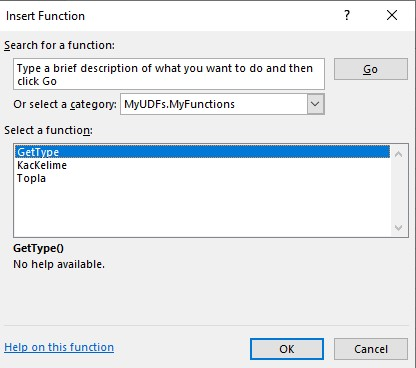
Formül description ve Intellisense
Herşey güzel de, Excel'in built-in fonksiyonları veya VBA'de yazdığımız UDF'lerde olduğu gibi intellisense çıkmadığını farketmişsinizdir. (Burdan okuyarak farkedemezsiniz bunu tabi, kendiniz denediğinde görebilirsiniz. Bir hücreye "=To" yazdığınızda aşağıda açılan bir kutuda "TO" ile başlayan tüm fonksiyonların gelmesini beklerisiniz ama "Topla" gelmez.)
Bu çok hoş bi durum değil. Bu haliyle yaptığımız çalışma VBA'in bile sağladığı bir fonksiyonaliteyi sağlayamıyor durumda. Bu sizin için veya kullanıcılarınız için çok kritik değilse böyle devam edebilirsiniz.
Ama tek sorunumuz bu değil, bir diğeri de automation add-in UDF'lerimize description ve parametre açıklaması da yazamıyoruz. Halbuki bunu da VBA'de yapabiliyorduk.
Bu durumdan memnun değilseniz iki alternatifiniz var.
Ya VSTO Addininiz içine VBA xlam addinizi de gömmek ve otomatik kurulmasını sağlamak veya XLL addin yaratmak. XLL'i aşağıdaki Excel DNA başlığında göreceğiz, diğerini de az sonra, ama önce bu yarattığımız automation add-in'i nasıl otomatik kurulur hale getiririz ona bir bakalım.
VSTO Add-in içinden Automation Add-in'i otomatik kurma
Şimdi elimizde aşağıdaki gibi iki proje oldu. Üstteki UDF'lerimizi barındırıyor ve bunu alttaki VSTO Addin projemize referans olarak eklememiz gerekiyor. İlk adımımız bu olacak.
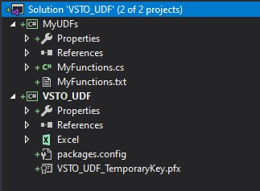
İkinci ve son adımımızda ise VSTO_UDF projemizdeki ThisAddin_Startup event handlerı içinde aşağıdaki kodları yazıyoruz. Bu kadar.
MyFunctions functionsAddinRef = null;
private void ThisAddIn_Startup(object sender, System.EventArgs e)
{
MyUDFYukle();
}
private void MyUDFYukle()
{
functionsAddinRef = new MyFunctions();
string NAME = functionsAddinRef.GetType().Namespace + "." + functionsAddinRef.GetType().Name;
string GUID = functionsAddinRef.GetType().GUID.ToString().ToUpper();
// is the add-in already loaded in Excel, but maybe disabled
// if this is the case - try to re-enable it
bool fFound = false;
foreach (Excel.AddIn a in Application.AddIns)
{
try
{
if (a.CLSID.Contains(GUID))
{
fFound = true;
if (!a.Installed)
a.Installed = true;
break;
}
}
catch { }
}
//if we do not see the UDF class in the list of installed addin we need to
// add it to the collection
if (!fFound)
{
// first register it
functionsAddinRef.Register();
// then install it
this.Application.AddIns.Add(NAME).Installed = true; //Bunlarda Namespace.Class şeklinde eklemek yeterli
}
}
Son kısımda eklediğimiz Register metodunu da MyUDFs içindeki MyFunctions classı içine aşağıdaki gibi ekliyorum.
public void Register()
{
RegisterFunction(typeof(MyFunctions));
}
Şimdi Excel'de manuel kurduğunuz bu add-ini kaldırın. Solution'ınızı clean edip tekrar build edin, Excelinizi tekrar açın, ve kontrol edin, UDF'inizin Excel addinler içine gelmiş olması lazım.
Mevcut VBA UDF'lerinin kullanımı
Diyelim ki, mevcut durumda VBA'de yazdığınız Excel add-in(xlam uzantılı) içinde bir sürü UDF var. Bunları tek tek .Net ile tekrar kodlamak istemiyorsunuz. Üstelik bunlara yazdığınız fonksiyon ve parametre descriptionları da var. Performans açısından da gayet yeterliler. Kullanıcılarınızın, bunları da mevcut VSTO Add-in'inizin bir parçası olarak yüklemelerini sağlayabilir miyiz. Evet.
Tabi bunu yaparken kullanıcılara manuel bir yükleme yaptırma sürecinden bahsetmiyorum. Zaten öyle yapmak istesek bunu normal VBA altında anlatmıştık.
Şimdi ilk olarak projemizin Properties'ine tıklayıp Resources sekmesine gelelim ve oraya ilgili xlam dosyamızı resource olarak ekleyelim, ki bu da projemizin bir parçası olarak derlensin.
Sonra aşağıdaki gibi bir VBA_Addin_Yukle fonksiyonu yazıp, ThisAddin_Startup içine şu satırı ekliyoruz. VBA_Addin_Yukle("VBAAddinForVstoUdf.xlam", Properties.Resources.VBAAddinForVstoUdf). Burda IsDirectoryWritable adında yardımcı bir fonksiyondan da yararlanıyoruz(İstersek bunu Utility paketimizin içine de alabiliriz).
private void VBA_Addin_Yukle(string vbaAddin, byte[] res)
{
//ilk kurulduğunda var mı diye baksın, varsa işaretli mi yani installed mu diye de baksın
try
{
bool isExist = false;
foreach (Excel.AddIn a in Application.AddIns)
{
if (a.Name == vbaAddin) //listede varsa ve kurulu değilse kur ve çık, kuruluysa bişey yapmadan çık
{
if (!a.Installed)
a.Installed = true;
isExist = true;
break;
}
}
if (isExist == false)
{
Excel.Workbook tempwb = this.Application.Workbooks.Add(); //geçici yaratıyoruz, hiç açık dosya yoksa hata alıyoruz çünkü
string hedefdosya = "";
if (IsDirectoryWritable(Application.UserLibraryPath)) //kullanıcının yazma izni var mı diye kontrol ediyoruz
hedefdosya = Application.UserLibraryPath + vbaAddin;
else
hedefdosya = Environment.SpecialFolder.LocalApplicationData.ToString() + vbaAddin; //buraya kesin izni vardır
File.WriteAllBytes(hedefdosya, res);
this.Application.AddIns.Add(hedefdosya).Installed = true; //ekle ve kur tek satırda
tempwb.Close();
}
}
catch (Exception ex)
{
System.Windows.Forms.MessageBox.Show(ex.Message);
}
}
public bool IsDirectoryWritable(string dirPath, bool throwIfFails = false)
{
try
{
using (FileStream fs = File.Create(
Path.Combine(
dirPath,
Path.GetRandomFileName()
),
1,
FileOptions.DeleteOnClose)
)
{ }
return true;
}
catch
{
if (throwIfFails)
throw;
else
return false;
}
}
Publish etme, Deployment ve Uninstall işlemleri
Publish/Deployment
Sadece VSTO Add-ini publish etmemiz yeterli. Zira zaten bunun içine UDF projemizi referans olarak veriyoruz.
Uninstall
Denetim Masasından Uninstall işlemi ile sadece VSTO_UDF'i kaldırmış oluruz. MyUDFs(veya VBA add-inimiz) hala add-ins içinde görünmeye devam eder. Zira bunların organik bir bağı yoktur. Bunları da kladırmak için Excel Add-in's penceresinde tick işaretlerini kaldırmak yeterli olabileceği gibi, dosyaları da tamamen kaldırmak isterseniz bunların kurulduğu yerleri bulun ve dosyaları silin. Kullanıcılarınıza da bu bilgiyi vermeyi unutmayın.
Kaynaklar
Son olarak faydalandığım kaynakları belirtmek isterim:
Excel DNA ile XLL tabanlı UDF yazmak
Normalde XLL yazmak için C/C++ bilmek gerekiyor ve bunu burada bahsedilen SDK ile yazıyorsunuz. Ben açıkçası bunu hiç denemedim. Zira .Net dışında çıkmak gibi bir niyetim yok. Hele hele Excel DNA gibi, bana C/C++'ın performansını vaadeden araçlar varsa. (Bi ara PyXLL'i deneyeceğim ama)
Peki madem Excel DNA bu kadar efsane. Neden Automation add-inle uğraşalım ki?
- Yeni bir paket(kütüphane) yüklemeyip Solution hacmini artırmak istemiyorsunuzdur
- Hatta yeni bir paket nasıl kullanılır, öğrenmek istemiyorsunuzdur
- Hız ve performans sizin için o kadar da kritik dğeildir, zaten küçük fonksiyonlar yazıyorsunuzdur
- Description ve Intellisense konusunu dert etmiyorsunuzdur. Hatta fonksiyonları sadece siz kullanıoyrsunuzdur, o yüzden ne olduklarını zaten biliyorsunuzdur
- Diğer nedenler(Şurda da VSTO ve ExcelDNA karşılaştırması var, bi bakın isterseniz)
Peki, biz yukardaki maddelerden birinin bizi mutlu etmediğni düşündük ve Excel DNA ile çalışmaya karar verdik diyelim ve devam edelim.
Bu arada şunu da tekrar belirtmekte fayda var.
ExcelDNA ile Ribbon arayüzü de geliştirebilir, Taskpane de yaratabilir, hatta VBA'de kullanabileceğiniz classlar da yazabilirsiniz. Ancak biz Ribbon işini normal Interop ile yapmıştık ve bu bizim için gayet de yeterli diyoruz, VBA'de kullanacağımız classlar yazmaya gerek yok diyoruz. Özetle biz burada sadece UDF kısmına odaklanalaım, ki zaten gerçekten ExcelDNA daha çok bu amaçla kullanılmakta. Arzu eden tüm geliştirmesini Interop yerine Excel DNA ile de yapabilir.
ExcelDNA'in bir dokümantasyon sitesi ve bir de github reposu var. Okumaya şu sayfa ile devam etmenizi, sonrar tekrar buraya gelmenizi tavsiye ederim.
Adım adım XLL add-in oluşturma
Komple repository'yi daha önce indirmediyseniz burdaki örnek uygulamayı şuradan indirebilirsiniz.
using ExcelDna.Integration;
public static class MyDNA
{
[ExcelFunction(Description = "ilk basit fonksiyonum", Category = "XLL Functions")]
public static string MerhabaXLL()
{
return "Merhaba XLL dünyası";
}
}
ExcelFunction isimli attribute ile fonksiyonumuza açıklama yazmış oluyoruz.
Bu haliyle projemizi build edelim veya debug edip de bakabiliriz. Bakalım fonksiyonumuz uygun yerde görünüyor mu, evet fonksiyon kategorilerinin en altında XLL Functions içinde çıktı.
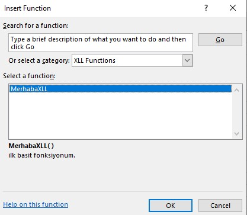
Excel'e yazarken intellisense de çıkıyor. Fonksiyon description alanı da geliyor.
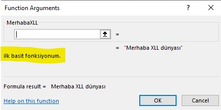
Herşey yolunda gibi. Şimdi daha karışık bir fonksiyon yazalım ve bu sefer hem parametre alsın ve bu paremetrelerin de açıklamalarını yazalım. Öyle ya, Automation add-inde olmayan tüm bu özellikleri görmemiz laızm.
Şimdi şu fonksiyonu yazalım. Burda dikkat edilecek iki husus var:
- Parametre olarak ilk önce ExcelArgument attribute yazdık ve argüman açıklamalarını yazdık.
- ExcelDNA'in kendi sitesinde belirttiği üzere parametre işleri biraz alengirli. Öncelikle Range tipinde bir paramerte yazamıyoruz. Bunun yerine object tipli iki boyutlu bi dizi yazıyoruz.
Ki VBA'den hatırlarsanız her range, tek kolon/satır olsa bile 2D bir dizidir.
- Keza, her .Net değişken tipi de desteklenmiyor. Mesela ayraç parametresini char olarak veremedik, bunu da object verip sonra char'a çevirdik. Burda ayraçı optional verdik, ama default değer atamadık, zira object tiplere null dışında default değer atanamıyor, o yüzden kod içinde buna parametre geçirilip geçirilmediğini kendim kontrol ettim. Optional parametrelerle iligli genel bilgiler için aşağıdaki kaynaklara bakın.
[ExcelFunction(Description = "Bir metinde kaç kelime olduğunu sayar", Category = "XLL Functions")]
public static int KacKelimeXLL(
[ExcelArgument(Name = "rng",Description = "Kelime sayısı yazdırılacak olan metin")] object[,] rng,
[ExcelArgument(Name = "ayrac", Description = "Hangi ayraçla bölünecek, default olarak boşluktur")] [Optional] object ayrac
)
{
char ayrac2;
if (ayrac is ExcelMissing)
ayrac2 = ' ';
else
ayrac2 = System.Convert.ToChar(ayrac);
string icerik = rng[0, 0].ToString();
return icerik.Split(ayrac2).Length;
}
Nasıl göründüğüne bakalım.
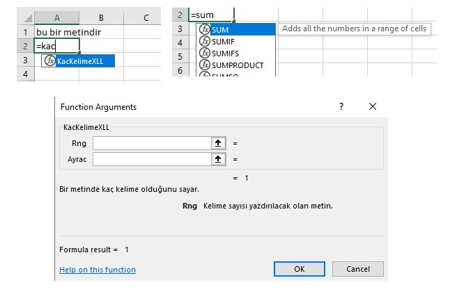
Yukardaki resimlerden göreceğiniz üzere fonksiyonumuzunz bu sefer parametre açıklamları da geldi. Faket Excel'in yerel fonksiyonlarında(Ör:SUM) olan fonksiyon tooltip'i(bu da intellsisensin bir parçası olarak düşünülüyor) bizde gelmedi. Bunu sağlamak için COMIntegration.cs adında bi dosya yaryatıp içine şunları yazalım.
using ExcelDna.Integration;
using ExcelDna.IntelliSense;
using System.Runtime.InteropServices;
namespace UDF_XDNA
{
[ComVisible(false)]
internal class ExcelAddin : IExcelAddIn
{
public void AutoOpen()
{
IntelliSenseServer.Install();
}
public void AutoClose()
{
IntelliSenseServer.Uninstall();
}
}
}
Tekrar build edelim. Ve sonuç:

Gördüğünüz gibi Excel'in yerel fonkisyonlarında bile olmayan bir özellik geldi. Artık fx tuşuna basıp fonksiyon argümanı okumaya da gerek yok, fonksiyonumu seçtiğimizde o an kaçıncı parametredeysek onun açıklamasını görüyoruz. Tıpkı Visual Studio içinde kodlama yaparken bir fonksiyona parametre gönderdiğimiz sırada oluşan görüntü gibi.
Bu fonksiyon tanımları ve argüman açıklamaları için daha sistematik bir çalışma yapmak isterserniz şurada ve şurada bashedilen yönteme bakabilirsiniz.
Başka bir örnek de yine ExcelDNA'nın kendi sitesinden alıp biraz modifiye ettiğim bir örnek. Burda seçilen range'deki tüm sayıların toplamını aldıran bir metod yazdık.
public static double dnaSumEvenNumbers2D(object[,] arg)
{
double sum=0;
int rows;
int cols;
rows = arg.GetLength(0);
cols = arg.GetLength(1);
for (int i = 0; i <= rows - 1; i++)
{
for (int j = 0; j <= cols - 1; j++)
{
object val = arg[i, j];
if (!(val is ExcelEmpty) && (double)val % 2 == 0) //boş olup olmadığını da kontrol etmekte fayda var, yoksa hata alırız
sum += (double)val;
}
}
return sum;
}
Range İşlemleri
İşimiz hala bitmedi, Range nesnesinin daha alengirli kısımları da var. Yukarıda range nesnesini object[,] olarak geçtik ama onun değerini kullanmış olduk. Peki ya onu bir range gibi kullanmak isteseydik? İşte şimdi işler biraz daha değişiyor. Zira şimdi Excel'e bunun bir range referansı olduğu söylememiz gerekiyor. Bunun için de üç yeni kavram hayatımıza girer.
- Metod attribute'ü olarak ekleyeceğimiz [ExcelFunction(IsMacroType = true)]
- Parametre attribute'ü olarak ekleyeceğimiz [ExcelArgument(AllowReference=true)]
- ve ilgili range parametresini, ki bunu object olarak vereceğiz, ExcelReference sınıfı ile casting'e tabi tutmak.
Örnek bir kod yazalım. Bu kod'da parametrimize gerçekten range olarak ihtiyacımız var, onun değerilye ilgilenmiyoruz. MEsela hüçcre içi renk bilkgisi ile ilgilenelim. Kodumuz şöçyle.
[ExcelFunction(IsMacroType = true)]
public static double GetArkarenk([ExcelArgument(AllowReference=true)] object hucre)
{
ExcelReference rng = (ExcelReference)hucre;
Excel.Range refrng = ReferenceToRange(rng);
return refrng.Interior.Color;
}
//yardımcı fonkisyon
private static Excel.Range ReferenceToRange(ExcelReference xlRef)
{
Excel.Application app = (Excel.Application)ExcelDnaUtil.Application;//Application nesnesine erişimi böyle sağlarız
//dynamic app = ExcelDnaUtil.Application; //Interop referansı eklemeden böyle de yapabilrdik ama intellinseten yararlanamayız
string strAddress = XlCall.Excel(XlCall.xlfReftext, xlRef, true).ToString();
return app.Range[strAddress];
}
Hucre parametresini object olarak geçtiğimize dikkat edin, object[,] değil. Daha sonra bunu bir ExcelReference nesnesine döndürüyoruz, bunun için casting yapıyoruz. Sonra bu cast edilmiş nesneyi de ReferenceToRange yardımcı fonksiyonuna göndererek gerçek bir Excel.Range elde ediyorum. Burda tabiki Excel Interop'u referans olarak eklemeyeli unutmayalım.
Bir başka örnek de seçili bölgedeki hücre sayısını getirsin.
[ExcelFunction(IsMacroType = true)]
public static long HucreAdet([ExcelArgument(AllowReference = true)] object alan)
{
ExcelReference rng = (ExcelReference)alan;
Excel.Range refrng = ReferenceToRange(rng);
return refrng.Cells.Count;
}
Bu konuda şurada biraz daha detay bulabilirsiniz.
Projeyi yayınlama
Kullanıcılarımnızn bu UDF'imizi solo kullanmlaarını istiyorsak işimiz basit. Release modda build ettiğimizde herşey hazır oluyor. \bin\Release klasöründe UDF_XDNA-AddIn-packed.xll ve bunun 64 bit versiyonu oluşacaktır. Bunlardan uygun olanı kullancınıza vermeniz yeterli, bunu normal bir Excel add-in gibi manuel ekleyebilirler.
Peki ya projemizi VSTO add-inimizle birlikte paketlemek istiyorsak. Yani yukarda Automation add-in ve Excel add-in'lerle yaptığımızın aynısını bu XLL addinle de yapmak istiyorsak?
Aslında çok basit; yukarda Excel-VBA ADd-inimizi yüklerken yaptığımızın aynısını yapacağız. İlgili Packed-xll(bizim örneğimizde UDF_XDNA-AddIn-packed.xll veya UDF_XDNA-AddIn64-packed.xll) dosyasını bir resource olarak ana VSTO uygulamamıza ekleyip startup sırasında bunun kurulumunu sağlarız. Bunu tekrar buraya yazmıyorum. Yukardaki kodların aynısı olacak.
Diğer kurulum seçenkeleri için şuraya bakınız.
Kaynaklar
ExcelDNA,
3rd party bir kütüphane olmasına rağmen fena olmayan bir kaynağa sahip. Kendi siteleri 3 farklı yerde bulunduığu için çok karışık geliyor bana. Ben elimden geldiğimce derleyip özetlemeye çalıştım, en faydalı kısımların vermeye çalıştım ama daha derinleşmek için aşağıdaki kaynaklara bakabilirisniz.
Ekstra Performanslı UDF yazımı
TEST SORULARI
Son Sorumuz şuymuş:Bir metindeki tüm noktaları yoketmek istiyorsunuz. Hangi fonksiyonu kullanırdınız?
Soru:
A şıkkı:
B şıkkı:
C şıkkı:
D şıkkı:
Doğru Cevap
Etiketler
İlişkili konuyu seç
339275
Label
* Sorulara verilen yanlış cevaplardaki esprili yorumlarım için hoşgörünüze sığınıyorum.
* Test ve Ödevlerdeki bazı detaylar burada anlatılmamış olabilir. Bunları kendiniz araştırıp bulmalısınız.
* Birden çok konuya ait içeriği olan ödevler var. Algoritmik açıdan bakıldığında o an en uygun konuya adreslenmiştir.
Dikkat! Bir soruya cevap verdikten sonra geri dönemezsiniz.